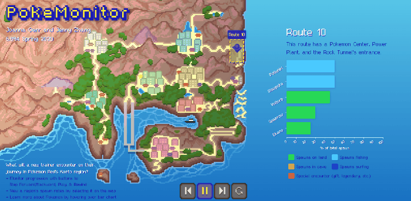

📈 Data Visualization
A few of the D3 visualizations I've worked on in recent years, including:
- PokeMonitor, which shows data about all the Pokemon spawns a trainer will encounter in their journey through the Kanto region
- Fandom Walk, a choice-driven, narrative viz that centers around the experience and reception of writing fanfiction within fandom
PokeMonitor
PokeMonitor is a D3 visualization that shows what a beginning Pokemon trainer in the Kanto region will encounter as they embark on their very own Pokemon journey. The spawn data and optimal adventure order have been sourced from the StrategyWiki for Pokemon Red.
- Created the D3 location-dependent Pokemon spawn rate bar-graphs with animated transitions and Pokedex tooltips
- Gathered and compiled data from SpawnWiki and other Pokemon datasets
- Drew all assets used in the viz, including: the pixel-art map of Kanto, the animated player icon, the pixel art video control buttons; also refined CSS on viz to resemble old-timey Pokemon aesthetic
- This readme contains a more thorough explanation of how the visualization works, and this writeup has further details behind our process

Accredation
I worked on this project with Jenny Zhang, who did a tremendous job manipulating the player icon's paths across and around the map, along SVG paths and with stylized manhattan-distance movement.
Fandom Walk
Fandom Walk is a choice-driven narrative data visualization that centers around the experience of writing fanfiction within fandom. Explicit visual encodings that draw direct connections between the process of writing fanfiction and the choices made when designing a data visualization, and interactions reveal the tangible presence of normally-hidden labor, encouraging the user to consider deliberate processes that go into construction of their fiction--and the instinctive reactions that arise when certain metrics for success go unmet.
- Used CSS/HTML to theme the project and site like a desktop with text editor, web browser, and terminals
- Created a javascript "text editor" to prompt answers, which creates a novel method of choice selection with increased intentionality
- Three D3 dataviz representations (scatterplot, heatmap, tooltips) are displayed in pseudo-terminal windows
- This readme elaborates on the intentions and methods behind this data visualization, and this short paper contains final conclusions about the project
Accredation
This project was solely my own. Apart from the anonymized dataset I found online, almost everything else was designed/coded by me.